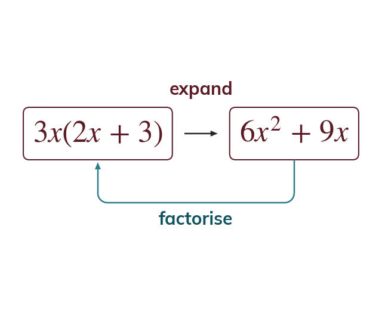
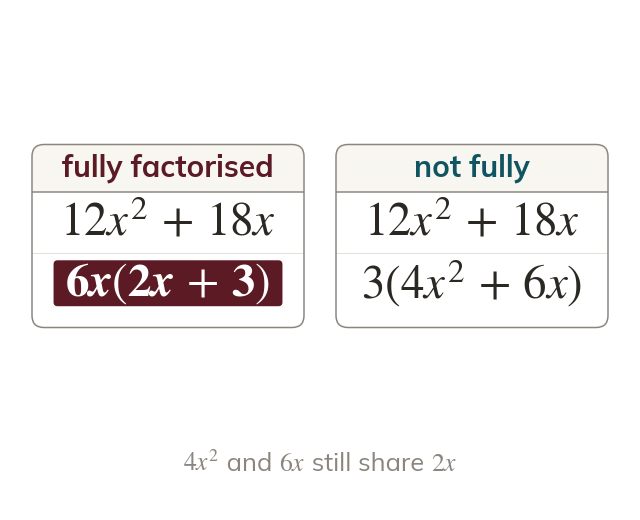
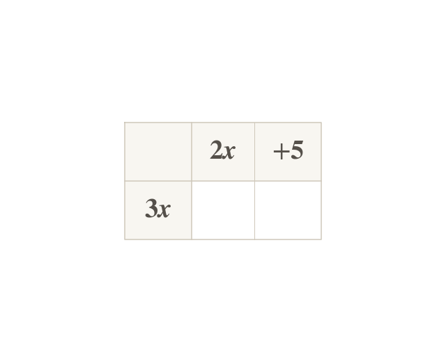
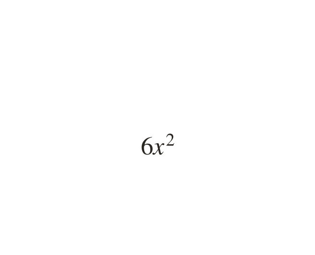
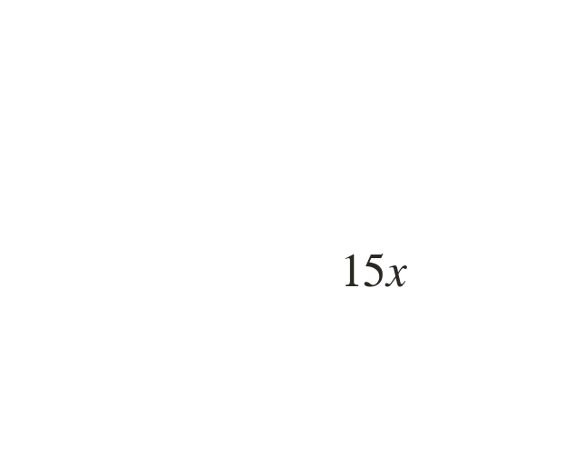
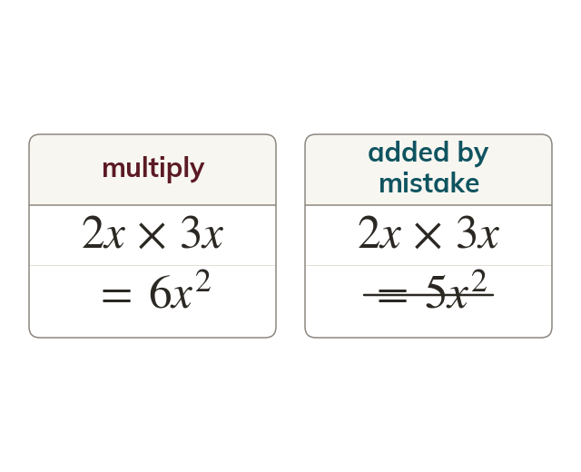
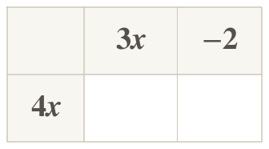
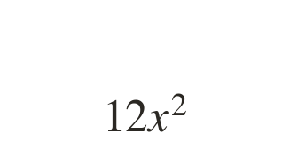
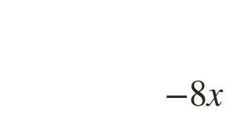

Factorising undoes expanding
Factorising rewrites an expression as a product, with a common factor outside a bracket. Expanding the answer always gives back the original expression.
Expanding and factorising are the same move in opposite directions. Fluency both ways is what makes simplifying, solving and proving possible later on.
Work down the page at your own pace. Write every answer in your book first, then click to check it.
Read each card, then follow the worked examples one step at a time.

Factorising rewrites an expression as a product, with a common factor outside a bracket. Expanding the answer always gives back the original expression.

The factor taken out is the HCF of every term, letters as well as numbers. Fully factorised means the terms left inside share no common factor.
Pick an answer. If it's wrong, the feedback tells you which mistake it was.
Read each card, then follow the worked examples one step at a time.



Expanding multiplies every term inside the bracket by the term outside. The area grid shows each product in its own cell.

The coefficients multiply and the powers of a letter add. So times is and times is not



Pick an answer. If it's wrong, the feedback tells you which mistake it was.
Finished? Next lesson: 8.14.5 Expanding Multiple Brackets.
For each skill, tap the one that is true for you today. Your Revise pages start with anything you mark Not yet.
Your ratings are saved on this device only.
Log in, then search for a code to practise that skill.
Videos, worksheets and more on each part of this lesson.